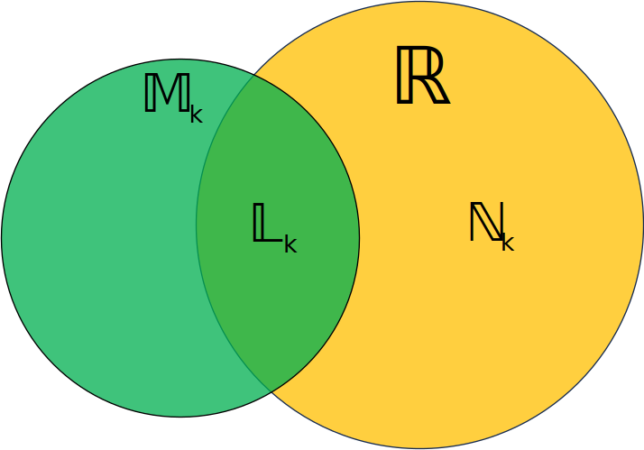
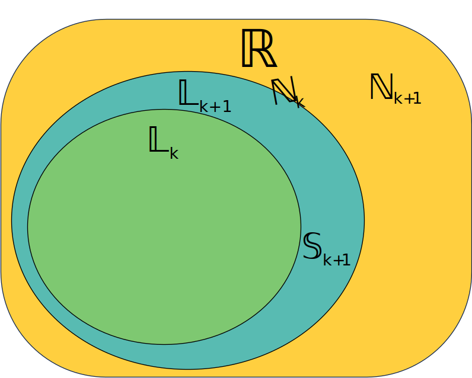

A table is shown below of Number Sets inside the Reals corresponding to their Hyperoperations. The number set will be denoted as \(L_k\) and be called Real \(k^{th}\) level Rationals, and its opposite set will be denoted as \(N_k\) which will be called \(k^{th}\) level Transcendentals. The Set which contains all \(k^{th}\)-level Rationals will be denoted as \(M_k\). There is a way in which the \(k^{th}\) hyperoperation relates to \(M_k\).
| \(k\) | \(k^{th}\) Hyperoperation | \(M_k\) | \(L_k\) | \(N_k\) |
| 1 | \(H_1\) (Addition) | Integers | "Same as \(M_1\)" | Floating Points |
| 2 | \(H_2\) (Multiplication) | Rationals | "Same as \(M_2\)" | Irrationals |
| 3 | \(H_3\) (Exponentiation) | Algebraics | Real Algebraics | Transcendentals |
| 4 | \(H_4\) (Tetration) | 4th level Rationals | Real 4th level Rationals | 4th level Transcendentals |
| \(...\) | \(...\) | \(...\) | \(...\) | \(...\) |
| \(n\) | \(H_n\) (\(n^{th}\) Hyperoperation) | \(n^{th}\) level Rational | Real \(n^{th}\) level Rational | \(n^{th}\) level Transcendental |
The Relationship between \(L_k\) and \(N_k\) can be expressed as:
$$L_k \cup N_k = ℝ$$And \(M_k\), \(N_k\), \(L_k\) can be expressed through this Venn Diagram.
We can also relate \(L_k\), \(L_{k-1}\), \(N_k\), \(N_{k-1}\) through this Venn Diagram and the new set \(S_k\) (\(k^{th}\) Gap) where\(S_{k+1} = L_{k+1} \cap N_k\).
We can confirm the following statements:
Here the variables are integers except x.
We'll see a special type of Polynomial which encodes the solution to all the numbers in \(M_k\) we'll call \(Q_k\). We'll call the General form of \(Q_k\) as \(Q_k\Xi\).
To show that what we are making, we'll see the polynomial type \(Q_1\), which encodes all the numbers in the set \(M_1\)(Integers). The general form of \(Q_1\) is: $$Q_1\Xi\space :\space x+a=0 $$
Likewise, we can encode all the numbers in the set \(M_2\) as \(Q_2\), \(M_3\) as \(Q_3\)(Regular Polynomials), and so on...
$$Q_2\Xi\space :\space ax+b=0, a\neq 0$$
$$Q_3\Xi\space :\space \sum\limits_{n=0}^{k}{a_{n}x^n}=0, a_k\neq 0$$
$$Q_4\Xi=???\space\text{(Could have terms having mix of addition, multiplication, exponentiation, and tetration.)}$$
$$...$$
The solution of \(Q_k\Xi\) are:
$$k=1;\space x=-a$$
$$k=2;x=-{b\over a}$$
$$k=3;\space\text{This form of polynomial has some polynomial formulas from degrees 1 to 4 but dosent have "algebraic "formulas for degrees 5 and so on. One of those are the quadratic formula:}$$$$ax^2+bx+c=0, a\neq 0\implies x={-b\pm\sqrt{b^2-4ac}\over 2a}$$
$$k=4;?!?\text{ (We haven't even constructed }Q_4\Xi\text{, so we cant properly study it and make formulas.)}$$
$$...$$
The complex polynomials \(Q_k, k>3\), can be so much complex and strange that it could contain roots which are not even on the complex plane, maybe they might be some new variations of imaginary numbers, something like super-imaginary numbers.
The Largest Constructable Rational Set we'll call A and it's Real Part B are defined as: $$\lim_{p\to\infty} M_k=A$$ $$\lim_{q\to\infty} N_k=B$$
The Number Level Quantifier Function or \(Q(x)\) is a function which which maps input x to input y such that \(M_y\) is the smallest \(M_k\) set that contains \(x\). Examples of some \(Q(x)\) are:
All the numbers in the difference \(M_k\backslash N_k\) can have imaginary or other types of super-imaginary numbers which will be denoted as \(Y_k\). As from \(M_3\), the sets contain more than just Real Numbers, we'll denote the Reals which are at the very start of the strange imaginary numbers \(Y_0\), then Complex Numbers as \(Y_1\), then the Super-Complex Numbers from the set \(M_4\)(4th level Rationals) as \(Y_2\), in general the strange imaginary numbers which come from \(M_n\) will be denoted as \(Y_{n-2}\).And we can also confirm a new statement: $$Y_0(\text{Reals}) \subset Y_1(\text{Complex Numbers}) \subset Y_2(\text{Super-Complex Numbers from }M_4) \subset Y_3 \subset ... \subset Y_n \subset Y_{n+1}\subset...$$
And the name to the Strange Complex Numbers will be denoted as \(Z_k\). For eg:{1 as \(Z_0\)(Reals, \(Y_0\)), i as \(Z_1\)(Imaginary Numbers \(Y_1\)),\(Z_2\) for \(Y_2\),\(Z_3\) for \(Y_3\),...,\(Z_n\) for \(Y_n\),...}
And even if these strange imaginary number sets \(Y_k\) are from Complex Rational Sets(\(M_{k+2}\)), they can have numbers which are not in \(M_{k+2}\), atleast which are in the form $$\text{Non-Computable Number} \cdot Z_k$$(For G1 Conjecture).
In This chapter we studied about New types of sets which are generated from Hyperoperations, New types of Extraordinary Polynomials and theorized about their general form we have conjectured 2 questions and made a function on the topic and we've theorized about variations of Complex Numbers which generate from these sets.